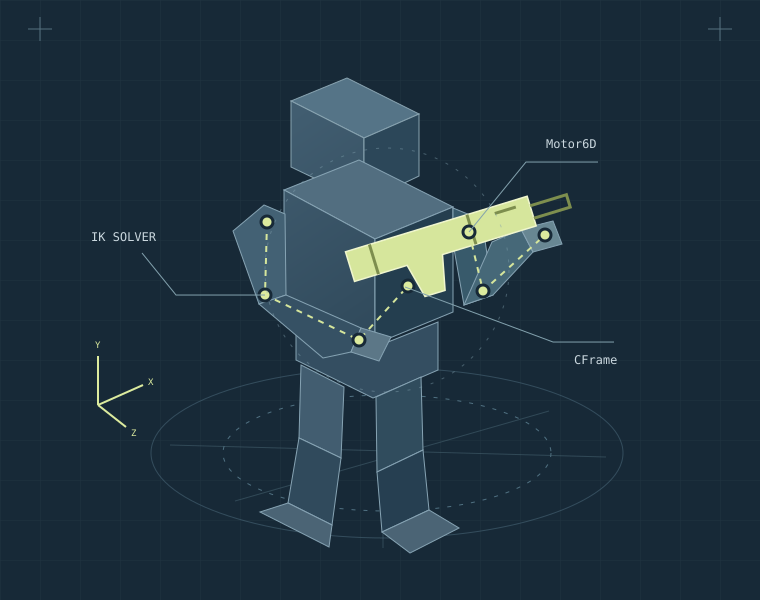
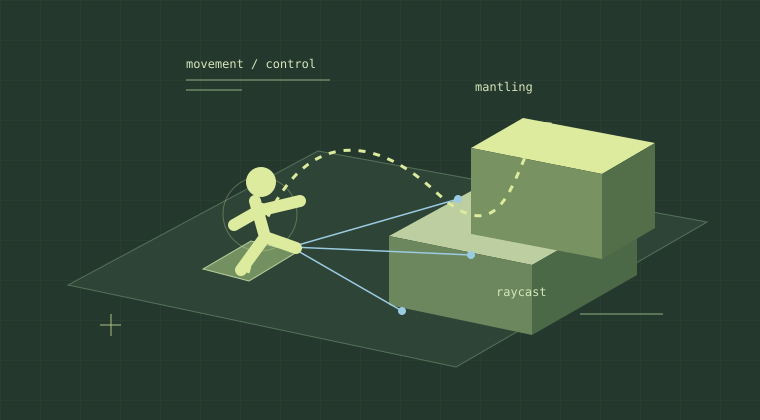
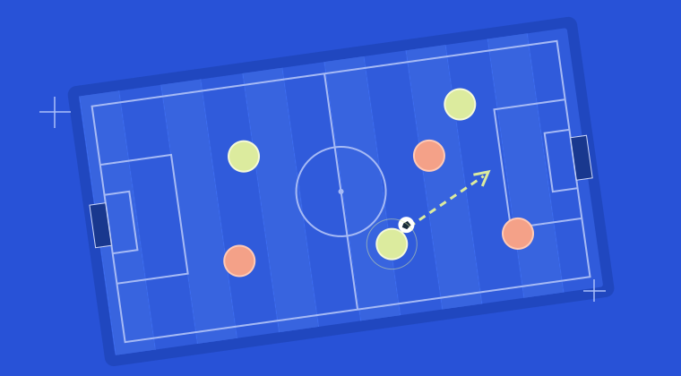
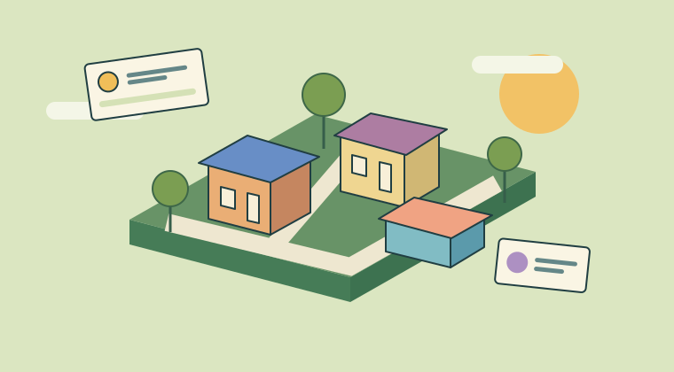
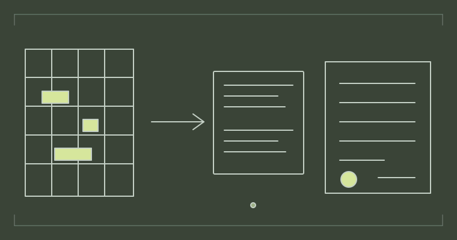

ODTÜ · Bilgisayar ve Öğretim Teknolojileri Eğitimi
Quo Vadis? Tasarım.
ODTÜ’de okuyorum. Roblox’ta oyun sistemleri geliştiriyor, İLKYAR’da çocukların etkinliklerinde kullandığımız yazılımlar yapıyorum.
Güncel: MagicLab stajı · İLKYAR’da gönüllü yazılım · Roblox oyun sistemleri

R15 · SİLAH / KARAKTER RİGİIK — Motor6D — CFrame
Roblox projeleri
Karakter hareketi, fizik ve çok oyunculu oyunlar.
KARAKTER · SİLAH SİSTEMİ
Advanced R15 Weapon Framework
R15 karakterler için yazdığım Tool tabanlı silah sistemi. Animasyonları CFrame, Motor6D ve Tween ile yönetiyorum; kolları silaha göre IK ile konumlandırıyorum.
Sistemin içinde
IK tabanlı kol konumlandırması ve prosedürel karakter animasyonuyla R15 iskelet entegrasyonu.
Silah salınımı, atalet ve geri tepme; ateş etme, şarjör değiştirme ve silaha özel davranışlar.
FPS ve isteğe bağlı TPS desteği, çevreyle etkileşim ve modüler silah yapılandırmaları.

EuphoriaParkur, tırmanma ve karakter fiziği.

KICKVANEArcade futbolu; klavye, dokunmatik ve gamepad kontrolleri.

Hustle RushTakım oyunu, menüler ve HUD.
Web, eğitim ve küçük araçlar

ProKordi Manager
Etkinlik programı, isimlik, kolaj ve tutanak hazırlamak için geliştirdiğim araç. Excel dosyalarını içeri alıyor; programı elle ya da yardımcıyla düzenleyebiliyorsun.
Projelerimin çoğu denemek istediğim bir şeyden ya da çözmek istediğim bir sorundan çıkıyor.
2018’de kodlama ve oyun geliştirmeye başladım, 2019’da Roblox’a geçtim. Şimdi ODTÜ’deki eğitimimin yanında oyun sistemleri, web uygulamaları ve eğitim etkinlikleri üzerinde çalışıyorum.
Boş zamanlarımda yürüyüş yapmayı, tenis oynamayı ve sporla ilgilenmeyi seviyorum. Programlama konusunda diğer öğrencilere yardımcı olmak ve öğrendiklerimi paylaşmak da hoşuma gidiyor.